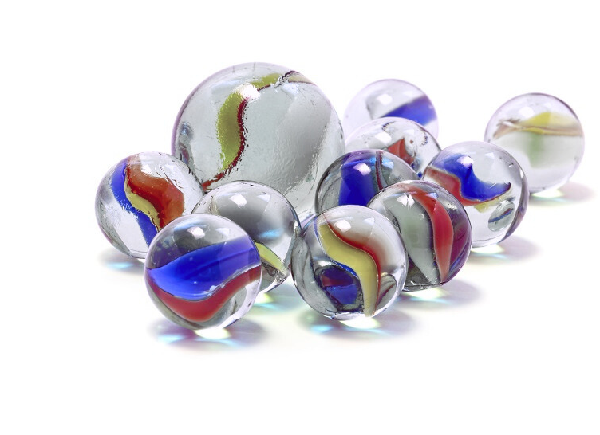

Ultimate Marble 2025
World Championship
Montréal Second Edition
Ultimate Marble 2022
World Championship
Montréal First Edition

<<<<<<< HEAD
24 Mai 2025 - 15:00 - Hochelaga
00
Days
00
Hours
00
Minutes
00
Seconds
World Championship
Montréal Second Edition
World Championship
Montréal First Edition
Days
Hours
Minutes
Seconds
Bienvenue dans la seconde édition de la Coupe du Monde d'Ultimate Marble, un sport
intense où tactique, précision et technicité seront maître mot pour pouvoir l'emporter sur vos adversaires.
Plongez au cœur d’une compétition palpitante, où des athlètes venus des quatre coins du globe (ou presque) s’affronteront à travers une série d’épreuves soigneusement conçues par nos meilleurs spécialistes. Précision, stratégie et mental d’acier seront mis à rude épreuve.
Osez défier le Grand Champion 2022, Pascal, et tentez de décrocher le titre suprême !
Bienvenue dans la première édition de la Coupe du Monde d'Ultimate Marble, un sport féroce où tactique et technicité doivent être conjuguer pour l'emporter sur son adversaire. Une compétition palpitante où des athlètes venus des quatre coins du globe (ou presque) vont s'affronter dans une série de 4 épreuves pensées et développées par nos plus grands spécialistes afin de mettre en avant leurs précisions et tester leur moral.
>>>>>>> 2156949007ccfc1fe73582fce7bfb8a1f8cf6227Tous les participants s’affrontent lors de mini-jeux avec une seule bille. À l’issue de cette phase, les 4 meilleurs joueurs gagnent le privilège de former leur équipe.
Tous les participants jouent en même temps les 4 épreuves avec une seule bille afin de déterminer les 4 meilleurs joueurs qui formeront leur "équipe".
Alpha Beta Gamma
En auto-arbitrage, les membres de chaque équipe se défient entre eux sur l’ensemble du parcours. Seuls les meilleurs accéderont à la grande finale.
Les finalistes s’affrontent une dernière fois sur le parcours avec de nouvelles règles pour désigner le grand champion de l’année 2025.
Tous les participants jouent en même temps les 4 épreuves avec une seule bille afin de déterminer les 4 meilleurs joueurs qui formeront leur "équipe".
Alpha Beta Gamma
Tous les participants jouent en même temps les 4 épreuves avec une seule bille afin de déterminer les 4 meilleurs joueurs qui formeront leur "équipe".
Alpha Beta Gamma

Après un tirage au sort, chaque participant lance à tour de rôle sa billes de manière
réglementaire (voir règlement) depuis la ligne de départ en
direction d'un mur. Les billes tirées restent en place. Si une bille touche le mur, elle est
éliminée et est retirée du jeu.
À l’issue des lancers, le participant dont la bille est la plus proche du mur remporte 1 point.
Le jeu se déroule en trois manches.
=======
Bienvenue dans la première édition de la Coupe du Monde d'Ultimate Marble, un sport féroce où tactique et technicité doivent être conjuguer pour l'emporter sur son adversaire. Une compétition palpitante où des athlètes venus des quatre coins du globe (ou presque) vont s'affronter dans une série de 4 épreuves pensées et développées par nos plus grands spécialistes afin de mettre en avant leurs précisions et tester leur moral.
>>>>>>> 2156949007ccfc1fe73582fce7bfb8a1f8cf6227
Après un tirage au sort, chaque participant lance à tour de rôle une bille en direction d'une
cible. Les billes restent en place puis un nouveau tir est effectué.
Après trois rounds, le participant dont la bille est la plus proche du centre de la cible
remporte 3 points. Les collisions sont encouragées.
Bienvenue dans la première édition de la Coupe du Monde d'Ultimate Marble, un sport féroce où tactique et technicité doivent être conjuguer pour l'emporter sur son adversaire. Une compétition palpitante où des athlètes venus des quatre coins du globe (ou presque) vont s'affronter dans une série de 4 épreuves pensées et développées par nos plus grands spécialistes afin de mettre en avant leurs précisions et tester leur moral.
>>>>>>> 2156949007ccfc1fe73582fce7bfb8a1f8cf6227
Chacun son tour, chaque participant tire ses 3 billes l'une après les autres en direction d'un calot (une grosse bille). Chaque impact remporte 1 point.
=======Bienvenue dans la première édition de la Coupe du Monde d'Ultimate Marble, un sport féroce où tactique et technicité doivent être conjuguer pour l'emporter sur son adversaire. Une compétition palpitante où des athlètes venus des quatre coins du globe (ou presque) vont s'affronter dans une série de 4 épreuves pensées et développées par nos plus grands spécialistes afin de mettre en avant leurs précisions et tester leur moral.
>>>>>>> 2156949007ccfc1fe73582fce7bfb8a1f8cf6227
Après un tirage au sort, chaque participant tire une bille en direction d'un trou. La bille reste là où elle s'est arrêtée, puis le joueur suivant effectue son tir. Une fois que tous les participants ont joué, le premier tireur reprend la main et tente à nouveau d'atteindre le trou, et ainsi de suite. Le premier joueur à réussir marque 3 points, le deuxième 2 points, et le troisième 1 point. Les billes qui tombent dans le trou sont retirées du jeu.
=======Bienvenue dans la première édition de la Coupe du Monde d'Ultimate Marble, un sport féroce où tactique et technicité doivent être conjuguer pour l'emporter sur son adversaire. Une compétition palpitante où des athlètes venus des quatre coins du globe (ou presque) vont s'affronter dans une série de 4 épreuves pensées et développées par nos plus grands spécialistes afin de mettre en avant leurs précisions et tester leur moral.
>>>>>>> 2156949007ccfc1fe73582fce7bfb8a1f8cf6227La World Championship Ultimate Marble 2025 – Montréal, Second Edition est un événement convivial dont l’objectif principal est de passer un bon moment. Tous les participants et spectateurs s’engagent à respecter l’esprit fair-play et la bonne ambiance de la compétition.
Afin de garantir une équité maximale, les tirages au sort s’effectueront par un lâcher de billes au-dessus d’une cible de référence. La bille la plus proche de cette cible désignera le premier joueur.
Un lancer régulier doit être effectué d’une seule main, celle-ci devant rester en contact permanent avec le sol au moment du tir. La bille doit être totalement libre (non maintenue) et ne peut être touchée que lors du tir. Toute contact avec la bille entraînant un déplacement, aussi minime qu'il soit, (mauvais tir, nettoyage de surface, maladresse, etc.) sera considérée comme un lancer valide, et le tour passera au joueur suivant.
Conformément à l’Article 1, l’événement se veut bon enfant. Toute tentative avérée de triche ou tout comportement contraire à l’esprit du jeu entraînera une disqualification immédiate de l’épreuve, pouvant aller jusqu’à une exclusion définitive de l’événement.
N’étant affilié à aucune fédération officielle, l’organisateur se réserve le droit de modifier, ajouter ou supprimer des règles si nécessaire pour assurer le bon déroulement du tournoi, tout en veillant à rester le plus équitable possible.
Chaque joueur recevra un set de trois billes, pouvant être réservé à l’avance via le serveur Discord officiel de l’événement. Les participants sont entièrement responsables de leur matériel tout au long du tournoi. Il est également possible d’utiliser ses propres billes, à condition qu’elles soient identiques aux modèles fournis en termes de taille, poids et matériau.
Le tournoi se déroulera le samedi 24 mai 2025 à partir de 15h. L’organisateur se réserve le droit de retarder, reporter ou annuler l’événement en cas de force majeure. Aucun remboursement ne pourra être accordé.
Le tournoi commencera à l’heure prévue. Les retardataires pourront rejoindre la compétition, mais perdront les points des épreuves déjà disputées.
Le tournoi aura lieu dans le quartier Hochelaga-Maisonneuve. L’adresse précise sera communiquée aux participants via Discord en temps voulu.
L’accès au terrain sera strictement réservé aux joueurs ayant complété leur inscription, rejoint le serveur Discord officiel et réglé les frais d’inscription.
Pour des raisons de confidentialité, les informations de paiement Interac seront uniquement accessibles via Discord.
La World Championship Ultimate Marble 2022 Montréal First Edition est un évènement ayant pour seul but de passer un bon moment. Tout participant et spectateur s'engage donc à réspecter le bon mood de l'évènement.
La World Championship Ultimate Marble 2022 Montréal First Edition est un évènement ayant pour seul but de passer un bon moment. Tout participant et spectateur s'engage donc à réspecter le bon mood de l'évènement.
La World Championship Ultimate Marble 2022 Montréal First Edition est un évènement ayant pour seul but de passer un bon moment. Tout participant et spectateur s'engage donc à réspecter le bon mood de l'évènement.
La World Championship Ultimate Marble 2022 Montréal First Edition est un évènement ayant pour seul but de passer un bon moment. Tout participant et spectateur s'engage donc à réspecter le bon mood de l'évènement.
La World Championship Ultimate Marble 2022 Montréal First Edition est un évènement ayant pour seul but de passer un bon moment. Tout participant et spectateur s'engage donc à réspecter le bon mood de l'évènement.
La World Championship Ultimate Marble 2022 Montréal First Edition est un évènement ayant pour seul but de passer un bon moment. Tout participant et spectateur s'engage donc à réspecter le bon mood de l'évènement.
La World Championship Ultimate Marble 2022 Montréal First Edition est un évènement ayant pour seul but de passer un bon moment. Tout participant et spectateur s'engage donc à réspecter le bon mood de l'évènement.
La World Championship Ultimate Marble 2022 Montréal First Edition est un évènement ayant pour seul but de passer un bon moment. Tout participant et spectateur s'engage donc à réspecter le bon mood de l'évènement.
>>>>>>> 2156949007ccfc1fe73582fce7bfb8a1f8cf6227